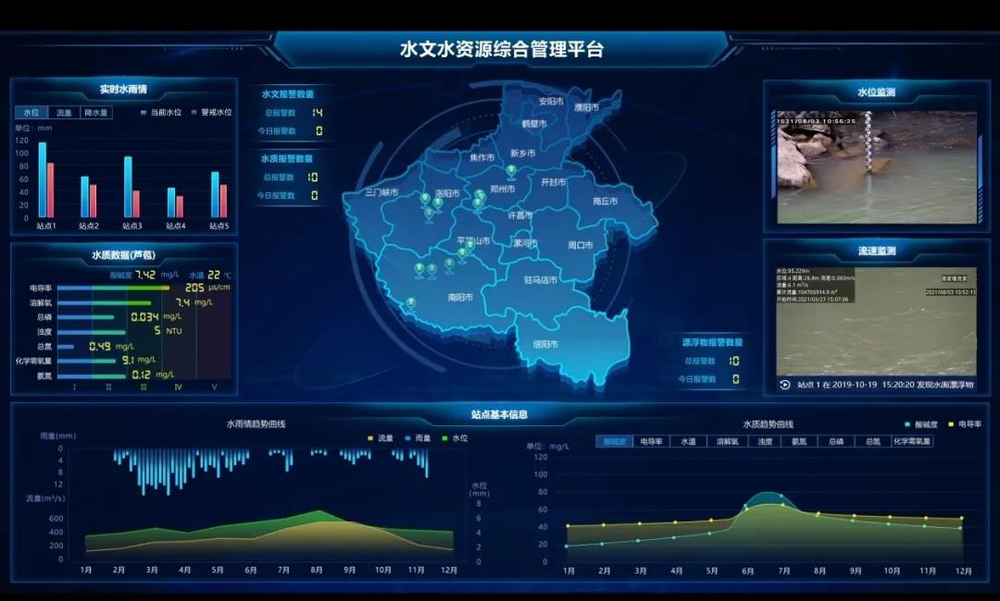
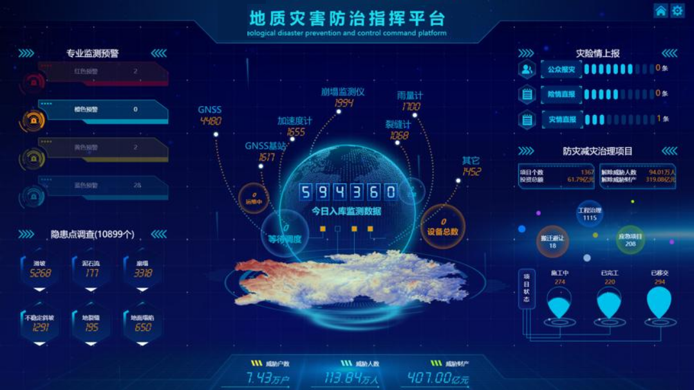
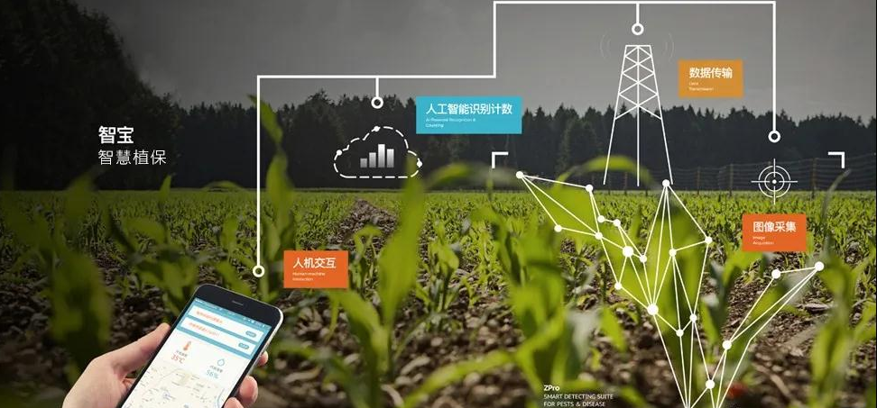

AI助力长江流域水污染监测
传统的水质监测方法耗时耗力且覆盖范围有限。我们开发的AI水质监测系统通过卫星遥感和地面传感器数据，实现了对长江流域水质的实时监测和污染源追踪...
"AI系统的引入使我们的监测效率提高了10倍，能够及时发现并定位污染源，为环保执法提供了有力支持。"
AI技术在各行业的实际应用案例，展示人工智能如何解决实际问题并创造价值。
 医疗健康
医疗健康
该系统采用深度学习算法分析CT、MRI等医学影像，可自动识别肿瘤、骨折等异常情况，辅助医生提高诊断效率和准确率。
 金融服务
金融服务
基于自然语言处理技术的智能客服系统，可处理80%以上的常见银行业务咨询，7×24小时不间断服务，大幅提升客户满意度。
 智慧城市
智慧城市
利用计算机视觉和强化学习技术优化城市交通信号灯控制，实时分析车流量并动态调整信号灯时长，有效缓解交通拥堵。
 工业制造
工业制造
基于深度学习的视觉检测系统，可自动识别生产线上的产品缺陷，检测精度远超人工，实现产品质量的智能化管控。
高校、研究机构和企业开展的创新AI项目，展示人工智能技术的多样性和创造力。
AI技术如何改变行业、解决实际问题的真实案例，包含用户反馈和量化成果。

传统的水质监测方法耗时耗力且覆盖范围有限。我们开发的AI水质监测系统通过卫星遥感和地面传感器数据，实现了对长江流域水质的实时监测和污染源追踪...

地震预警分秒必争。我们的AI地震预警系统通过分析地震波初期信号，能够在破坏性地震波到达前数秒至数十秒发出预警，为人员疏散和关键设施保护争取宝贵时间...

某农业大县引入AI病虫害识别系统和精准灌溉方案，通过无人机航拍和地面传感器网络，实现了作物生长状态的实时监测和精准农业管理...
某偏远地区中学引入AI个性化学习系统，通过分析学生的学习行为和知识掌握情况，为每位学生定制学习路径和练习内容，弥补了师资不足的问题...
可直接体验的AI应用Demo，感受人工智能技术的实际效果和交互体验。
输入文本描述，AI将根据您的描述生成独特的图像作品。支持多种艺术风格选择。
输入文本，选择语音风格，AI将生成自然流畅的语音输出。